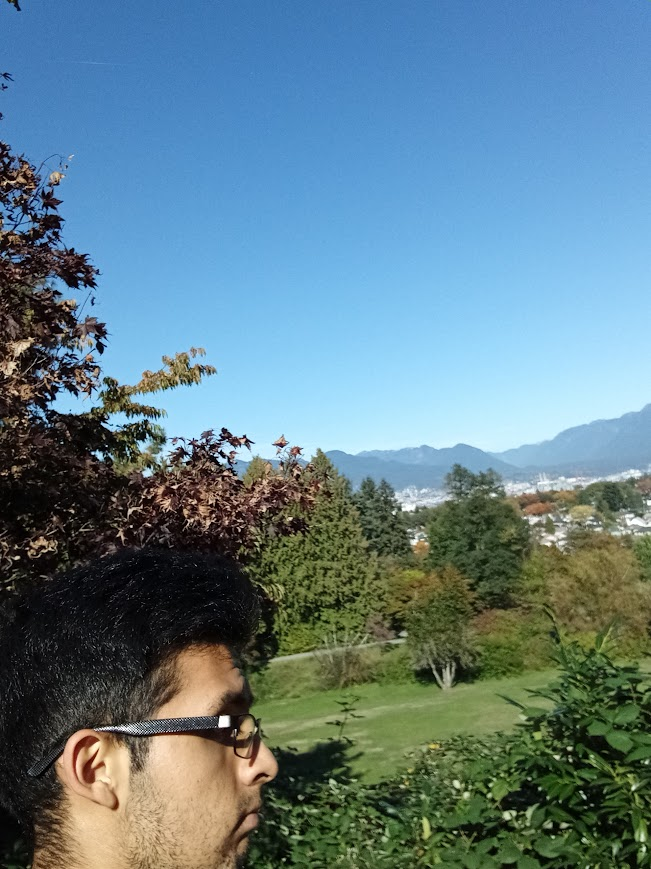

Cultural Connections Page!
Hello I'm Christian Julian Salazar. Welcome to my cultural connections page!"

- Cultural Shocks: Since arriving here, one of the most striking things I've encountered is seeing homeless
individuals openly using drugs in public. It's unsettling to see them frozen in uncomfortable positions, which
I’ve been told is a tactic to avoid theft or confrontations with others. Some even lose their lives due to overdoses,
something I never imagined witnessing so openly on the streets.
On a different note, public transportation was another surprise. I’m used to chaotic, overcrowded buses, but here, even though
the service is pricier compared to routes outside the city, everything runs orderly and respectfully. Each stop is observed without
any arguments or aggressive behavior between drivers or passengers. People’s kindness stands out, too; anyone is willing to lend a
hand if you need directions. This warmth left a mark on me, especially after receiving guidance from a stranger who helped me without
hesitation.
- Things I Miss: One of the things I miss the most is the food from home. Maybe it’s due to the high-quality standards here that make
everything a bit pricier, but I crave the day I can have a homemade dish prepared just like my grandmother’s—her red rice or chicken
stew is unbeatable. Another thing I miss is the little neighborhood store right next door, where you could find anything at a reasonable
price. Whether it was ingredients for lunch or just some candy, it was always convenient and affordable. Here, perhaps due to quality
standards and regulations, product availability feels less flexible compared to Ecuador.
- Amazing Things I Love: I truly appreciate being here, feeling a sense of security. Given the challenging situation much of Latin America is facing,
it’s inspiring to see how people live here—openly and freely expressing who they are, without being dominated by power struggles or vice. This freedom
doesn’t mean I let my guard down entirely; I remain cautious and attentive whenever I go out. But it’s refreshing to be in a place where people are encouraged
to be themselves without fear.One of the exciting things here is the variety of stores that offer products I’d never seen or tried before—unique sauces, sweets,
fresh foods, and even niche electronics. I’m also fascinated by the stores dedicated to gaming themes, T-shirts, and manga. As a fan, it’s incredible to see a place
where pop culture is celebrated so openly, with entire stores catering to interests that are much harder to find back home.
- Finally, without taking into account everything I have done to get to where I am now, very few people know, but in the end I am a person
who, if I want something, I get it based on objectives. My main objective in the future would be to open my own business, which I see as a
very profitable option, or to go directly to work for a video game industry, whether from the smallest one, specializing in any branch of
technology that I am currently learning and that is thanks to the bases that the teachers are instilling in me. I entered with a zero level
of knowledge, without knowing anything about it, a month and a half has already passed and I would say that my level of learning is still l
ow and it is something that I would also like to increase.